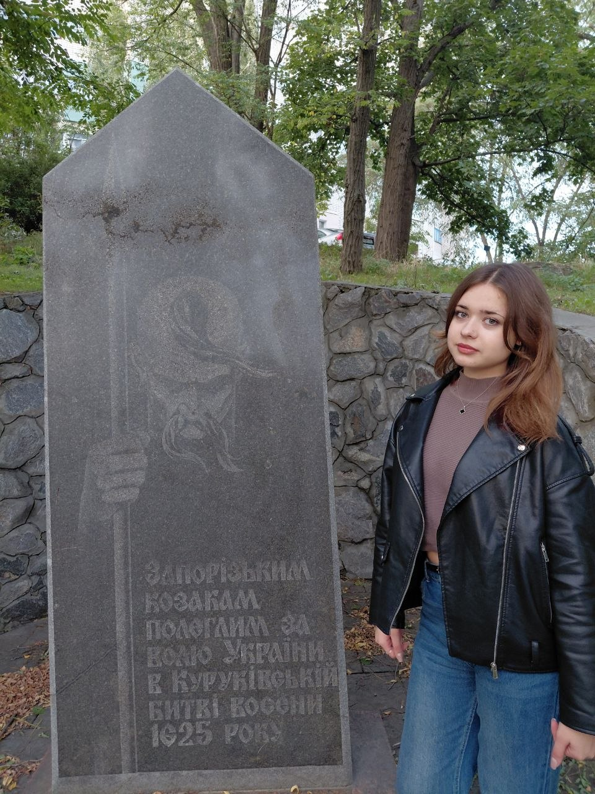
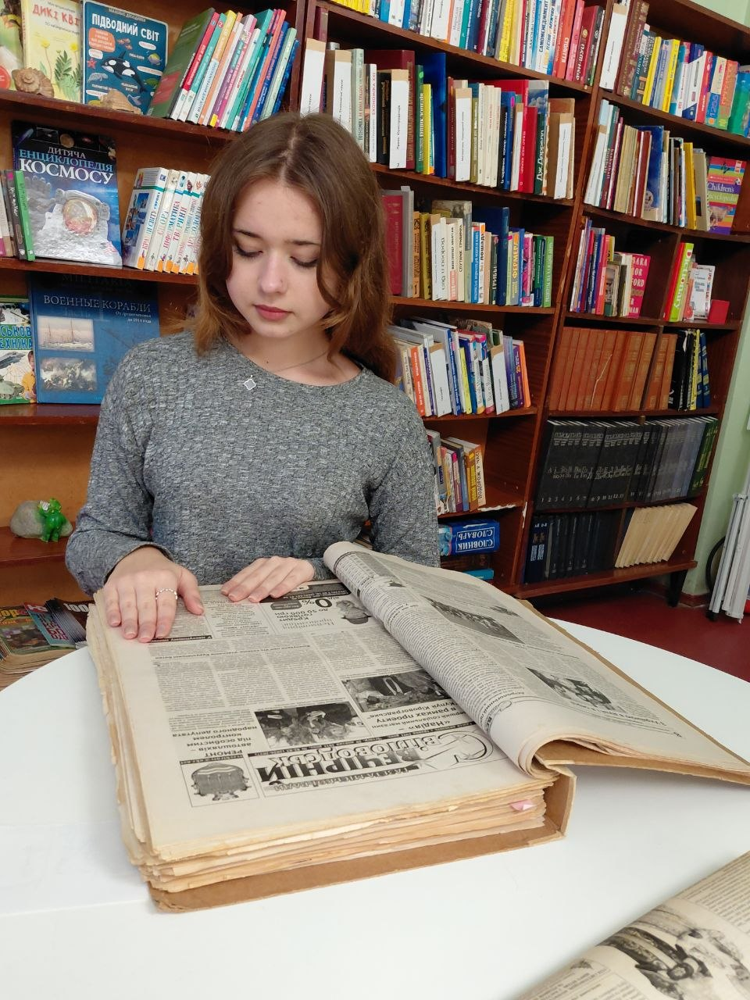
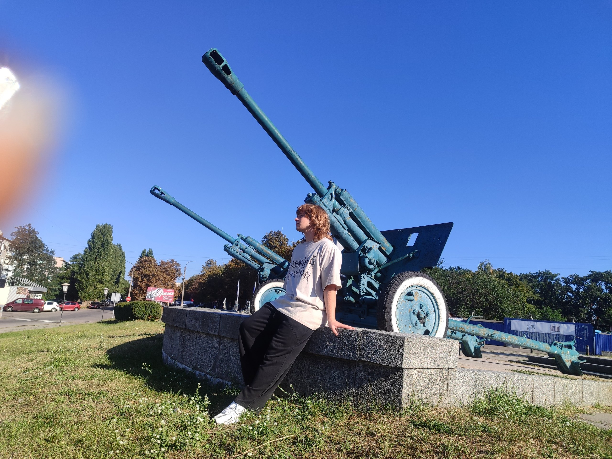
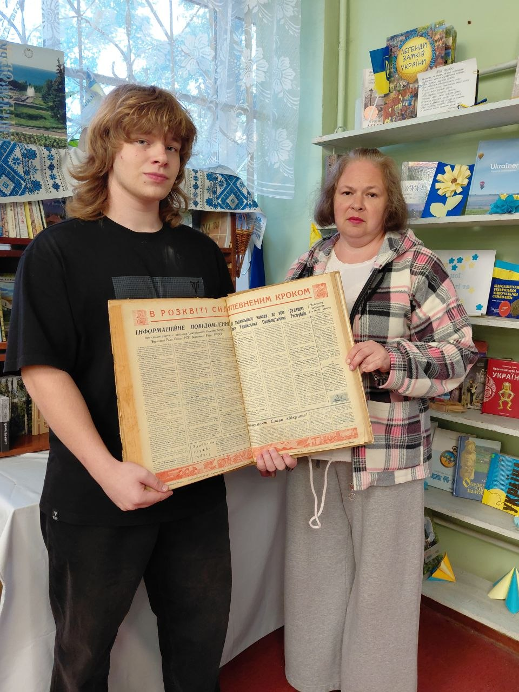
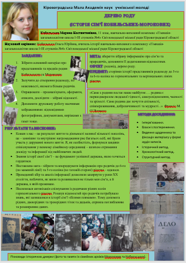
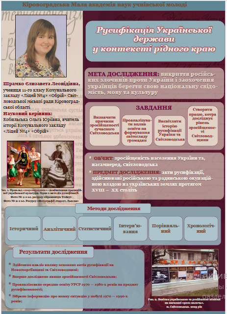
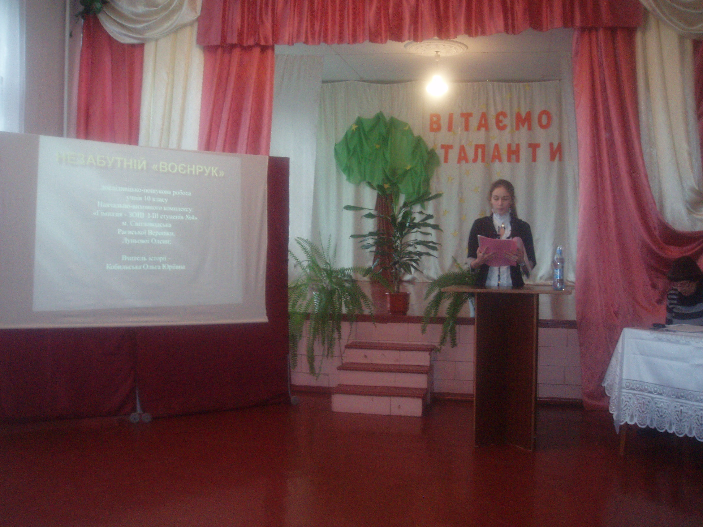
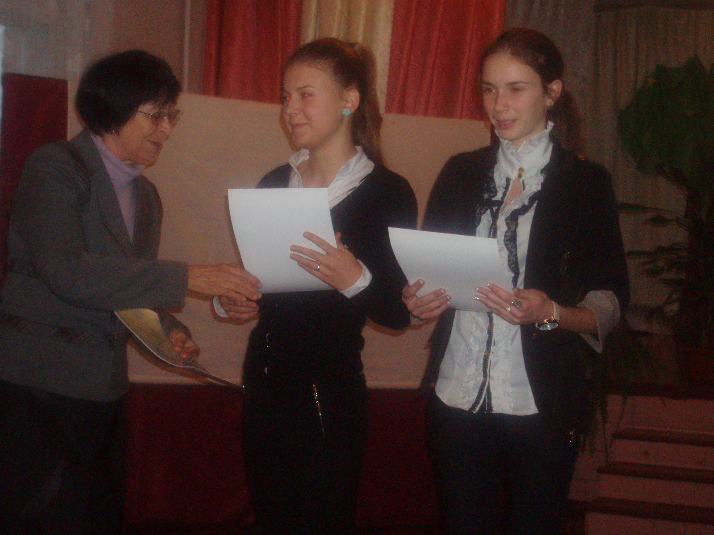

м. Світловодськ, Кіровоградська область
Дослідницька діяльність є важливим напрямом роботи нашого шкільного музею. Учні регулярно беруть участь у міських та всеукраїнських конкурсах Малої академії наук (МАН) та регіональних краєзнавчих конкурсах.
Номінація: «Пам’ятки історії»
Тема дослідження: «Меморіальний пам’ятник Куруківській битві»
Виконавець: Руденко Діана, учениця 11-Б класу КЗ «Ліцей №4 "Обрій"»
Науковий керівник: Кобильська Ольга Юріївна
Короткий виклад: Дослідження присвячене вивченню історії меморіального знака у Світловодську, присвяченого подіям Куруківської битви 1625 року між козаками (під проводом Марка Жмайла) та польським військом. У ході роботи проаналізовано історичні джерела та картографічні матеріали, з'ясовано локацію подій та зв'язок Світловодська з колишнім Криловом і спадкоємністю історичної пам’яті, а також розглянуто стан пам’ятної стели та перспективи її популяризації.


Номінація: «Пам’ять громади»
Тема дослідження: «Меморіал Слави»
Виконавець: Єднєв Єгор, учень 11-Б класу КЗ «Ліцей №4 "Обрій"»
Науковий керівник: Кобильська Ольга Юріївна
Короткий виклад: Дослідження присвячене історії спорудження Меморіалу Слави у Світловодську (1967 рік) та розвінчанню міфів щодо датування на обеліску. У ході роботи вивчено архівні матеріали міського краєзнавчого музею та центральної бібліотеки, проаналізовано зміст капсули часу, відкритої у 2017 році, а також досліджено символічне значення артоб’єктів та встановлення сучасного меморіалу «Крила надії».


Тема роботи: «Музей історії школи (напрям — історія навчального закладу)»
Виконавець: Кобильська Марина Костянтинівна (випуск 2022 року)
Науковий керівник: Кобильська Ольга Юріївна, вчитель історії
Відділення: етнологія | Секція: історія
Виконила: Кобильська Марина Костянтинівна, учениця 11 класу НВК «Гімназія-загальноосвітня школа І–ІІІ ступенів №4»
Науковий керівник: Кобильська Ольга Юріївна, вчитель історії НВК «Гімназія-загальноосвітня школа І–ІІІ ступенів №4»
Організатори: Міністерство освіти і науки України, Департамент освіти і науки Кіровоградської ОДА, Кіровоградська МАН учнівської молоді (Світловодськ-2021).
Відділення: історично-краєзнавче | Секція: історія
Виконила: Шрамко Єлизавета Леонідівна, учениця 11 класу НВК «Гімназія-загальноосвітня школа І–ІІІ ступенів №4»
Науковий керівник: Кобильська Ольга Юріївна, вчитель історії КЗ «Ліцей №4 «Обрій»
Організатори: Міністерство освіти і науки України, Департамент освіти і науки Кіровоградської ОДА, Кіровоградська МАН учнівської молоді (Світловодськ-2022).



